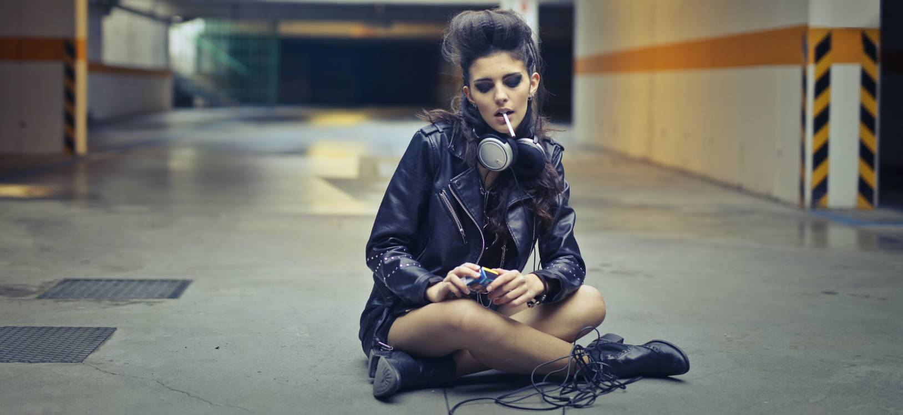
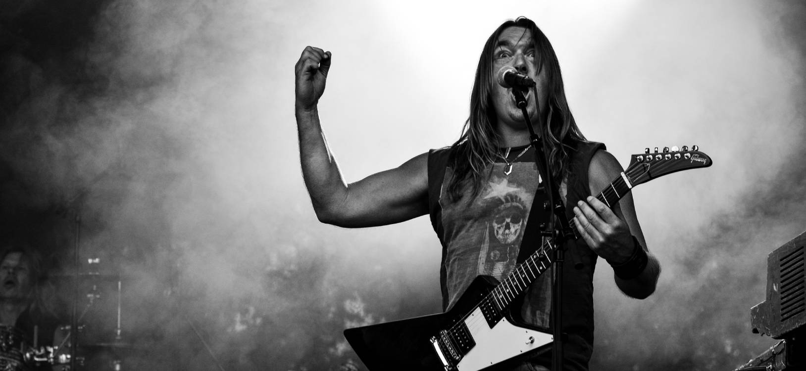
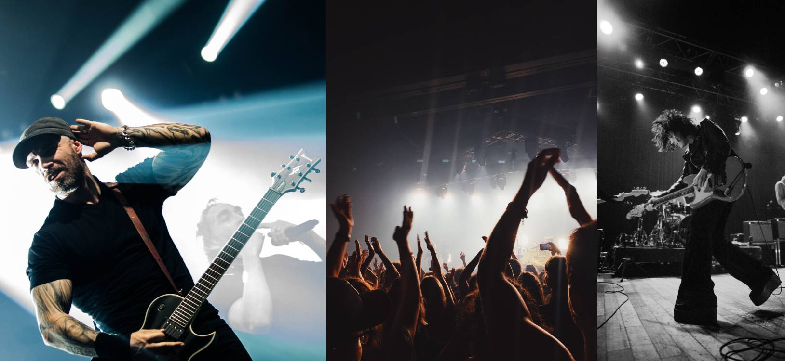
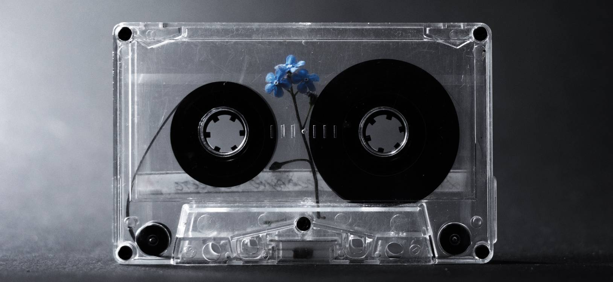

Biografia
Fulanos del Rock nace en 1998 en la Ciudad de Buenos Aires- Argentina La banda se destaca por crear canciones con un estilo de rock urbano. Su música se viene depurando desde hace 5 años, colaborando con diferente autores y músicos y tocando en diferentes festivales como por ejemplo: Cosquin Rock y Fiestas regionales a lo largo del país . Su discografía cuenta con 2 discos de estudio y 1 grabado en vivo durante su participación en el Festival de Cosquin. El grupo se compone por el cantante principal Daniel Bloom que estudió en el conservatorio de Buenos Aires y durante su juventud fue participando de diferentes bandas de musica aportando su impronta. David y Julian Sehman en el bajo, Javier Suarez en la batería, Clara Lis en guitarra y coros.
Proximos Eventos
-
15 de Octubre
Obras CABA28 de Noviembre
Luna Park CABA14 de Marzo
Estadio centenario Uruguay12 de Mayo
Predio de Cosquin Córdoba
- 
- 
- 
- 